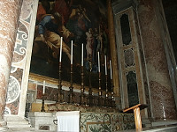
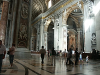
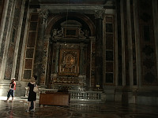
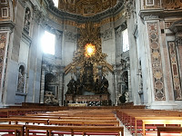
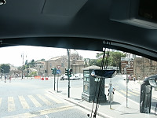
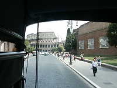
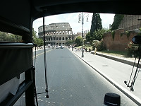
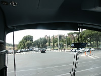

|
Obie at St. Peter's Square |
Obie at St. Peter's Square |

Inside St. Peter's Basillica |

An altar in St. Peter's Basilica |

Interior of Basilica |

Inside the Basilica |

Interior of Basilica |

The Chapel of the Cathedra |
|

Various sites around Rome as seen from the bus. |

|

|

|